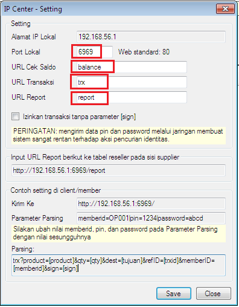

IP Center
Transaksi IP merupakan transaksi menggunakan IP Address, untuk mendukung hal itu di versi 3.6.8 OtomaX menghadirkan modul baru bernama IP Center. Modul ini hanya tersedia di OtomaX edisi Enterprise dan Ultimate klik disini. Oleh karena itu bila Anda ingin transaksi IP dan edisi OtomaX Anda bukan edisi tersebut silahkan upgrade dahulu klik disini; dan bila ingin membeli OtomaX baru klik disini.
Modul ini memiliki 2 fungsi, yaitu
- Menerima transaksi IP Sedoter, sehingga Anda dapat menjadi Supplier
- Menerima report status transaksi IP dari Supplier, sehingga Anda dapat menjadi Sedoter
Dengan demikian Modul ini harus diaktifkan ketika melakukan transaksi IP, baik Anda sebagai Supplier ataupun Sedoter.
Transaksi IP memiliki beberapa metode, diantaranya: XML/Text, HTTP GET, HTTP POST. Nah... untuk IP Center di versi 3.6.8 ini masih mendukung metode HTTP GET, belum mendukung metode lainnya, selengkapnya klik disini.
Di Modul IP Center (pilih IP Center -> klik kanan -> klik Setting) Anda dapat melihat IP dan Port sebagai tujuan transaksi Sedoter (disebut dengan URL Trx) serta IP dan Port sebagai penerima report status transaksi dari Supplier (disebut dengan URL Report)

URL Trx merupakan hal yang perlu Anda berikan kepada Sedoter ketika Anda menjadi Supplier, selengkapnya klik disini, sementara URL Report merupakan hal yang perlu Anda berikan kepada Supplier ketika Anda menjadi Sedoter, selengkapnya klik disini.
Dengan hanya Modul IP Center tidak serta merta Anda dapat transaksi IP sebagai Supplier atau Sedoter, Anda juga harus memiliki IP Publik Statis selengkapnya klik disini.
Jika Anda membutuhkan tutorial tentang IP Center silahkan download disini. Kemudian bila Anda memiliki pertanyaan seputar transaksi IP silahkan kirimkan ke alamat email support@otomax-software.com atau klik disini.
Catatan: Sedoter ialah lawan dari supplier, yakni server yang mengambil stok atau host to host ke server lain; sedangkan Supplier ialah server yang stoknya diambil oleh server lain.